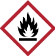
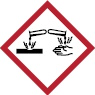
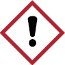

3.1.1 Verantwortung und Pflichten für Arbeitgeber
Die nachfolgenden Abschnitte erläutern Pflichten und Aufgaben von Arbeitgebern beim Umgang mit Reinigungs- und Pflegemitteln.
Arbeitgeber haben vor bzw. beim Umgang mit Reinigungs- und Pflegemitteln
Siehe auch Arbeitsschutzgesetz, Gefahrstoffverordnung, Biostoffverordnung, Betriebssicherheitsverordnung, Arbeitsstättenverordnung, PSA-Benutzungsverordnung, Verordnung zur arbeitsmedizinischen Vorsorge, DGUV Vorschrift 1 "Grundsätze der Prävention" und DGUV Vorschrift 38 "Bauarbeiten"
3.1.2 Verantwortung der Beschäftigten
Die Versicherten bzw. Beschäftigten sind verpflichtet, die Unterweisungen und Anweisungen von ihrem Arbeitgeber zu beachten, dazu gehört,
Zur Verwirklichung der Pflichten nach Abschnitt 3.2.4.4 "Persönliche Schutzmaßnahmen" gehört insbesondere, dass die Versicherten gemäß den Unterweisungen und Anweisungen ihres Arbeitgebers
Vom Arbeitgeber nicht autorisierte oder freigegebene Produkte dürfen nicht verwendet werden. Die Versicherten haben gemeinsam mit der Betriebsärztin oder dem Betriebsarzt, der Fachkraft für Arbeitssicherheit und dem Betriebs- oder Personalrat den Arbeitgeber darin zu unterstützen, die Sicherheit und den Gesundheitsschutz bei Reinigungs- und Pflegearbeiten zu gewährleisten.
Siehe auch §§ 15 und 16 Arbeitsschutzgesetz, § 7 Abs. 5 Gefahrstoffverordnung, DGUV Vorschrift 1 "Grundsätze der Prävention" und DGUV Vorschrift 38 "Bauarbeiten"
3.1.3 Verantwortung für auftraggebende Personen
Das Vertragsverhältnis zwischen Auftraggebenden und Auftragnehmenden sollte so gestaltet werden, dass der Schutz der Menschen und der Umwelt vor schädlichen Einwirkungen gefährlicher Stoffe und Zubereitungen unter Berücksichtigung arbeitsschutzrechtlicher Bestimmungen gewährleistet ist. Auftraggebende informieren Auftragnehmende vor Aufnahme der Tätigkeit sowie unverzüglich und unaufgefordert bei jeder Änderung über Bereiche von denen besondere Gefahren ausgehen können. Auftraggebende stellen den Informationsfluss zu Auftragnehmenden sicher und ermöglichen Auftragnehmenden die Teilnahme an richtungsweisenden Gremien, sofern für die Leistungserbringung relevante Aspekte betroffen sind (z. B. Arbeitsschutzausschusssitzungen).
Siehe auch § 13 Betriebssicherheitsverordnung, § 15 Gefahrstoffverordnung, §§ 5-6 DGUV Vorschrift 1 "Grundsätze der Prävention"
3.2.1 Grundsätze zur Durchführung der Gefährdungsbeurteilung
Die Gefährdungsbeurteilung ist die systematische Ermittlung und Bewertung relevanter Gefährdungen der Beschäftigten mit dem Ziel, erforderliche Maßnahmen für Sicherheit und Gesundheit bei der Arbeit festzulegen. Grundlage ist eine Beurteilung der mit den Tätigkeiten verbundenen inhalativen (durch Einatmen), dermalen (durch Hautkontakt), oralen (durch Verschlucken) und physikalisch-chemischen Gefährdungen (z. B. Brand- und Explosionsgefährdungen) sowie der sonstigen durch Gefahrstoffe bedingten Gefährdungen.
Arbeitgeber dürfen eine Tätigkeit mit Reinigungs- und Pflegemitteln erst aufnehmen lassen, nachdem eine Gefährdungsbeurteilung durchgeführt wurde und die erforderlichen Schutzmaßnahmen getroffen wurden. Die Gefährdungsbeurteilung muss in regelmäßigen Abständen und bei gegebenem Anlass überprüft und ggf. aktualisiert werden; das Überprüfungsintervall ist vom Arbeitgeber festzulegen. Die Gefährdungsbeurteilung ist vom Arbeitgeber fachkundig zu erstellen. Sind Arbeitgeber nicht selbst fachkundig, müssen sie sich fachkundig beraten lassen. Fachkundig können insbesondere die Fachkraft für Arbeitssicherheit, die Betriebsärztin oder der Betriebsarzt sein.
Arbeitgeber müssen alle Tätigkeiten mit Gefahrstoffen beurteilen. Bei gleichartigen Arbeitsbedingungen an vergleichbaren Arbeitsplätzen und gleichen Tätigkeiten reicht die Beurteilung eines Arbeitsplatzes für jede der zu betrachtenden Tätigkeiten aus.
Gleichartige Arbeitsbedingungen können auch bei räumlich getrennten Tätigkeiten (z. B. in unterschiedlichen Objekten) vorliegen und mehrere Gefahrstoffe abdecken.
Zur Unterstützung bei der Gefährdungsbeurteilung einschließlich Festlegung der Maßnahmen können Handlungsempfehlungen oder Hilfestellungen Dritter verwendet werden. Dies können z. B. branchen- oder tätigkeitsspezifische Handlungsempfehlungen (z. B. die vorliegende DGUV Regel) und branchenbezogene Gefahrstoffinformationssyteme (z. B. GISBAU) sein.
Siehe auch § 5 Arbeitsschutzgesetz und § 3 Abs. 1, DGUV Vorschrift 1 "Grundsätze der Prävention"
3.2.1.1 Ermitteln von Gefährdungen
Arbeitgeber haben im ersten Schritt zu ermitteln, ob Beschäftigte Tätigkeiten mit Gefahrstoffen durchführen oder ob Tätigkeiten durchgeführt werden, bei denen Gefahrstoffe entstehen oder freigesetzt werden können. Zu den Gefahrstoffen zählen auch nicht als gefährlich eingestufte Arbeitsstoffe und Tätigkeiten, die zu Gefährdungen für die Sicherheit und Gesundheit von Beschäftigten bei der Arbeit führen können, z. B. Feuchtarbeit. Neben den Stoffeigenschaften haben Arbeitgeber die Tätigkeiten, Arbeitsabläufe, Verfahren, Arbeits-, Betriebs- und Umgebungsbedingungen zu ermitteln und zu berücksichtigen.
Siehe auch TRGS 400 Nr. 5
3.2.1.2 Tätigkeitsbezogene Informationen
Bei den Tätigkeiten sind alle Arbeitsvorgänge und Betriebszustände zu berücksichtigen, z. B. Transport, Lagerung, das Umfüllen von Konzentraten, Ansetzen der Reinigungsflotte, Durchführen der Reinigungsarbeiten und das Entsorgen von Restmengen.
Folgende Informationen sind zu berücksichtigen:
Siehe auch TRGS 400 Nr. 5.4
3.2.1.3 Stoffbezogene Informationen
Für die Ermittlung stoffbezogener Informationen haben Arbeitgeber Informationen insbesondere aus der Kennzeichnung und dem Sicherheitsdatenblatt heranzuziehen.
Bei fehlender Kennzeichnung ist nicht automatisch davon auszugehen, dass keine Gefährdung vorliegt. Auch Reinigungsmittel, die nicht gekennzeichnet sind, jedoch einen gefährlichen Stoff in einer Konzentration enthalten, die nicht zur Einstufung des Gemisches führt, können Gefahrstoffe sein. Deshalb ist zu prüfen, ob im Sicherheitsdatenblatt oder in anderen Produktinformationen Hinweise auf gefährliche Eigenschaften vorliegen.
Bei nicht als gefährlich gekennzeichneten Produkten, die mit dem EUH210 – "Sicherheitsdatenblatt auf Anfrage erhältlich" versehen sind, ist das Sicherheitsdatenblatt anzufordern, wenn die vorhandenen Informationen für eine Gefährdungsbeurteilung nicht ausreichen.
Auch für Produkte, für die aufgrund der gesetzlichen Vorgaben kein Sicherheitsdatenblatt erforderlich ist, sind Lieferanten verpflichtet, den Abnehmern verfügbare und sachdienliche Informationen zu übermitteln, die notwendig sind, damit geeignete Maßnahmen ermittelt und angewendet werden können.
Darüber hinaus ist die Gefahrstoffsoftware WINGIS eine wichtige Informationsquelle für die Bestimmung der gefährlichen Eigenschaften von Reinigungs- und Pflegemitteln, zur Ermittlung tätigkeitsspezifischer Gefährdungen und daraus resultierenden Schutzmaßnahmen.
Die Eigenschaften von wichtigen Gruppen von Reinigungs- und Pflegemitteln werden in den Abschnitten 3.2.3.1 bis 3.2.3.9, "Gefährdungen bei Tätigkeiten mit Reinigungs- und Pflegemitteln" beschrieben.
Siehe auch TRGS 400 Nr. 5.2 und 5.3
3.2.2 Beurteilung der Gefährdung
3.2.2.1 Allgemeines
Die mit den Tätigkeiten verbundenen inhalativen (Einatmen), dermalen (Hautkontakt), physikalisch-chemischen (z. B. Brand- und Explosionsgefährdung) und sonstigen durch den Gefahrstoff bedingten Gefährdungen, wie z. B. durch Temperatur oder Druck, sind zu beurteilen.
Die Gefährdungsbeurteilung ist Grundlage für die Festlegung von Schutzmaßnahmen, welche die Gesundheit und Sicherheit der Beschäftigten und anderer Personen bei allen Tätigkeiten mit Gefahrstoffen gewährleisten müssen. Die Allgemeinen Schutzmaßnahmen nach § 8 Gefahrstoffverordnung (GefStoffV) sind dabei immer zu berücksichtigen.
Werden branchen- oder tätigkeitsbezogene Handlungsempfehlungen oder vorhandene Gefährdungsbeurteilungen herangezogen, ist ihre Anwendbarkeit anhand der Kriterien aus Anhang 2 der TRGS 400 zu prüfen. Hierbei haben Arbeitgeber
Wird die Gefährdungsbeurteilung unter Verwendung von branchen- oder tätigkeitsbezogenen Handlungsempfehlungen erstellt, entbindet dies nicht
Siehe auch TRGS 400 Nr. 6 und TRGS 400 Anhang 2
3.2.2.1.1 Tätigkeiten mit geringer Gefährdung
Tätigkeiten mit geringer Gefährdung sind Tätigkeiten, bei denen aufgrund der Eigenschaften des Gefahrstoffs, der Arbeitsbedingungen, einer nur geringen verwendeten Stoffmenge und einer nach Höhe und Dauer niedrigen Exposition allgemeine Schutzmaßnahmen nach § 8 GefStoffV zum Schutz der Beschäftigten ausreichen.
Wenn zum Schutz der Gesundheit der Beschäftigten technische Maßnahmen oder persönliche Schutzausrüstungen (z. B. Schutzhandschuhe) notwendig sind, darf keine geringe Gefährdung angenommen werden.
Bei einer Tätigkeit mit geringer Gefährdung darf keine Brand- und Explosionsgefährdung bestehen, keine Feuchtarbeit und nur eine geringe Gefährdung durch Hautkontakt und durch Einatmen vorliegen. Dies ist z. B. bei kurzzeitigen Tätigkeiten mit verdünnten Anwendungslösungen von Unterhaltsreinigern im Wischverfahren der Fall. Die TRGS 400 spricht von Haushaltsprodukten, die unter haushaltsüblichen Bedingungen (geringe Menge und kurze Expositionsdauer) verwendet werden.
Bei Tätigkeiten mit geringer Gefährdung sind folgende Maßnahmen nicht erforderlich: Prüfung auf Ersatzverfahren und Ersatzstoffe, technische Schutzmaßnahmen, persönliche Schutzausrüstung, weitere Expositionsermittlung, Begrenzung der Zahl der Beschäftigten, Zutrittsverbote sowie eine Betriebsanweisung nach GefStoffV.
Bei Tätigkeiten mit geringer Gefährdung sind Hygienemaßnahmen (siehe Abschnitt 3.2.4.5) und allgemeine Schutzmaßnahmen (siehe Abschnitt 3.2.4.1) zu ergreifen.
Liegt eine Tätigkeit mit geringer Gefährdung vor, kann auf eine detaillierte Dokumentation der Gefährdungsbeurteilung verzichtet werden (zur Dokumentation der Gefährdungsbeurteilung siehe Abschnitt 3.2.7).
Siehe auch TRGS 400 Nr. 6.2
3.2.2.1.2 Prüfung auf Ersatzverfahren und Ersatzstoffe
Die Prüfung auf Ersatzverfahren und Ersatzstoffe, auch Substitution genannt, steht an erster Stelle der Maßnahmen zur Minimierung von Gefährdungen. Nach den Vorgaben der TRGS 600 ist im Rahmen der Substitution zu prüfen, ob
Die Ermittlung und Beurteilung der Substitutionsmöglichkeiten sowie die Substitutionsprüfung sind zu dokumentieren.
Die Substitutionsprüfung haben Arbeitgeber in Zusammenarbeit mit auftraggebenden Personen vor Aufnahme der Tätigkeiten mit Reinigungs- und Pflegemitteln durchzuführen, damit für den jeweiligen Anwendungsfall die verwendeten Arbeitsverfahren und Produkte für die Beschäftigten keine Gefährdung der Gesundheit und Sicherheit darstellen bzw. auf ein Minimum reduziert werden.
Damit das gesundheitliche Risiko für die Beschäftigten so gering wie möglich ist, ist für Tätigkeiten mit Reinigungs- und Pflegemitteln die Umsetzung insbesondere folgender Maßnahmen zu prüfen:
Für den Vergleich zweier möglicher Gefahrstoffe kann das GHS-Spaltenmodell der DGUV genutzt werden. Das GHS-Spaltenmodell greift ausschließlich auf Informationen zurück, die Arbeitgeber aus Sicherheitsdatenblättern, Produktinformationen und der Kennzeichnung von Gefahrstoffen ableiten können. Die Unterteilung erfolgt in sechs Gefahren (akute und chronische Gesundheitsgefahren, Umweltgefahren, physikalisch-chemische Gefahren, Freisetzungsverhalten und Verfahren). Das zu beurteilende Produkt kann anhand einer fünfstufigen Beurteilungsskala von "sehr hoch" bis "vernachlässigbar" jeder der sechs Gefahren zugeordnet werden. Nach erfolgter Einordnung und Vergleich der Mittel ist das Mittel mit den niedrigsten Gefahren zu bevorzugen.
Auch der GISCODE gibt eine Information zur Substitution (Kapitel 4.1).
Siehe auch § 7 Abs. 3 Gefahrstoffverordnung und TRGS 600
3.2.2.2 Gefährdung durch Einatmen
Gefährdungen durch das Einatmen von Stoffen können entstehen, wenn gefährliche Stoffe in Form von Gasen, Dämpfen, Nebel oder Stäuben in der Luft im Atembereich der Beschäftigten vorhanden sind. Das Ausmaß der Gefährdung hängt u. a. von den gesundheitsgefährlichen Eigenschaften der Stoffe ab und wird durch die Konzentration und die Dauer ihres Auftretens (Exposition) beschrieben. Arbeitgeber haben die Höhe und Dauer der inhalativen Exposition zu ermitteln.
Ermittlungen und Beurteilungen zur Gefährdung durch Einatmen müssen für alle in der Arbeitsplatzluft auftretenden Gefahrstoffe vorgenommen werden. Dabei dienen für eine Reihe von Gefahrstoffen die in der TRGS 900 festgelegten Arbeitsplatzgrenzwerte als Beurteilungsmaßstab. Sie geben an, bis zu welcher Konzentration eines Stoffes in der Luft am Arbeitsplatz akute oder chronische schädliche Auswirkungen auf die Gesundheit im Allgemeinen nicht zu erwarten sind. Arbeitsplatzgrenzwerte beziehen sich auf einen Zeitraum von acht Stunden, wobei zusätzlich Expositionsspitzen mit einer festgelegten Dauer von Kurzzeitwertphasen zu beachten sind.
Für Stoffe ohne einen Arbeitsplatzgrenzwert sind andere geeignete Beurteilungsmaßstäbe heranzuziehen (z. B. Grenzwertvorschläge der DFG-Senatskommission zur Prüfung gesundheitsschädlicher Arbeitsstoffe oder "Derived no-effect-levels" (DNEL) nach der REACH-VO).
Die Ermittlung der inhalativen Exposition kann durch Arbeitsplatzmessungen oder durch nichtmesstechnische Ermittlungsmethoden, wie die Übertragung von Ergebnissen vergleichbarer Arbeitsplätze oder Berechnungen, erfolgen.
Messergebnisse von vergleichbaren Arbeitsplätzen müssen nicht aus demselben Betrieb kommen. Sie können beispielsweise auch aus anderen Betrieben oder aus branchen- oder tätigkeitsspezifischen Hilfestellungen (z. B. Expositionsbeschreibungen der Unfallversicherungsträger) stammen.
Für Tätigkeiten im Wischverfahren mit den im Abschnitt 3.2.3 aufgeführten Reinigungs- und Pflegemitteln liegt eine Expositionsbeschreibung vor. Eine Übersicht der Ergebnisse ist in Tabelle 2 (Expositionsbeschreibung) dargestellt. Ergebnisse und Schlussfolgerungen aus der Expositionsbeschreibung werden auch im Abschnitt 3.2.3 dargestellt.
Werden Messergebnisse von vergleichbaren Arbeitsplätzen übernommen (z. B. aus der Expositionsbeschreibung), haben Arbeitgeber sicherzustellen, dass die Expositionsbedingungen vergleichbar sind. Die Entscheidungen über die Vergleichbarkeit werden von Arbeitgebern getroffen und dokumentiert. Dazu kann die Kriterienliste des Anhangs 4 der TRGS 400 genutzt werden.
Bei Sprühverfahren ist durch die dabei entstehenden Aerosole eine höhere Gefährdung durch Einatmen als im Wischverfahren zu erwarten. Beim Wischen werden nur flüchtige Inhaltsstoffe der Reinigungs- und Pflegemittel (z. B. Lösemittel) durch Verdampfen in die Raumluft freigesetzt. Beim Sprühen gelangen zusätzlich auch nichtflüchtige Bestandteile wie Tenside in die Raumluft.
Siehe auch REACH-Verordnung TRGS 402 und TRGS 900
Tabelle 2: Expositionsbeschreibung
| GISCODE für Reinigungs- und Pflegemittel | ||
| GISCODE | Produktgruppe | Expo |
| GD10 | Desinfektionsreiniger, Basis Sauerstoffabspalter, reizend | |
| GD13 | Desinfektionsreiniger, Basis Sauerstoffabspalter, reizend (inkl. schwere Augenschäden) |
|
| GD20 | Desinfektionsreiniger, nicht gekennzeichnet | |
| GD30 | Desinfektionsreiniger, Basis Quats, Amphotenside, Amine, reizend | |
| GD33 | Desinfektionsreiniger, Basis Quats, Amphotenside, Amine, reizend (inkl. schwere Augenschäden) |
|
| GD40 | Desinfektionsreiniger, Basis Quats, Amphotenside, Amine ätzend | |
| GD50 | Desinfektionsreiniger, Basis Aldehyde (ohne Formaldehyd, Glyoxal) | |
| GD55 | Desinfektionsreiniger, Basis Polyhexamethylenbiguarid | |
| GD65 | Desinfektionsreiniger, Basis Aldehyde (mit Glyoxal, ohne Formaldehyd) | |
| GD70 | Desinfektionsreiniger, Basis Phenole | |
| GD80 | Desinfektionsreiniger, Basis Aldehyde (mit Formaldehyd) | |
| GE10 | Emulsionen/Dispersionen | |
| GE 20 | Emulsionen/Dispersionen, lösemittelhaltig | |
| GF50 | Fassadenreiniger, sauer | |
| GF60 | Fassadenreiniger, alkalisch | |
| GF70 | Fassadenreiniger, flusssäure/fluoridhaltig | |
| GG10 | Grundreiniger, nicht gekennzeichnet, lösemittelfrei | |
| GG20 | Grundreiniger, nicht gekennzeichnet, lösemittelhaltig | |
| GG40 | Grundreiniger, reizend (inkl. schwere Augenschäden), lösemittelfrei | |
| GG50 | Grundreiniger, reizend (inkl. schwere Augenschäden), lösemittelhaltig | |
| GG60 | Grundreiniger, reizend (inkl. schwere Augenschäden), lösemittelhaltig, mit 2-Butoxyethanol/Limonen | |
| GG70 | Grundreiniger, ätzend, lösemittelfrei | |
| GG80 | Grundreiniger, ätzend, lösemittelhaltig | |
| GG90 | Grundreiniger, ätzend, lösemittelhaltig mit 2-Butoxyethanol/Limonen | |
| GGL05 | Glasreiniger, lösemittelhaltig, nicht gekennzeichnet | |
| GGL10 | Glasreiniger, lösemittelhaltig, entzündbar | |
| GH10 | Holz- und Steinpflegemittel, entaromatisiert | |
| GH20 | Holz- und Steinpflegemittel, aromatenarm | |
| GH30 | Holz- und Steinpflegemittel, aromatenreich | |
| GH40 | Steinkristallisatoren, Basis Hexafluorsilikate | |
| inhalative Exposition im Wischverfahren | ||
| GISCODE | Produktgruppe | Expo |
| GR10 | Rohrreiniger, stark alkalisch Basis Natronlauge | |
| GR20 | Rohrreiniger, stark alkalisch Basis Natronlauge und Aluminiumpulver | |
| GS10 | Sanitärreiniger, nicht gekennzeichnet | |
| GS35 | Sanitärreiniger, reizend | |
| GS50 | Sanitärreiniger, reizend (inkl. schwere Augenschäden) | |
| GS60 | Sanitärreiniger, reizend (inkl. schwere Augenschäden), mit flüchtigen Säuren | |
| GS80 | Sanitärreiniger, ätzend | |
| GS85 | Sanitärreiniger, ätzend, mit flüchtigen Säuren | |
| GS90 | Sanitärreiniger, Basis Hypochlorit | |
| GT10 | Teppichreiniger, tensidhaltig, nicht gekennzeichnet | |
| GT20 | Teppichreiniger, tensidhaltig, reizend | |
| GT30 | Teppichreiniger, tensidhaltig, reizend (inkl. schwere Augenschäden) | |
| GU10 | Scheuermittel, nicht gekennzeichnet | |
| GU15 | Scheuermittel, reizend | |
| GU20 | Spülmittel, nicht gekennzeichnet | |
| GU30 | Spülmittel, reizend | |
| GU33 | Spülmittel, reizend (inkl. schwere Augenschäden) | |
| GU40 | Unterhaltsreiniger, lösemittelfrei, nicht gekennzeichnet | |
| GU50 | Unterhaltsreiniger, lösemittelhaltig, nicht gekennzeichnet | |
| GU55 | Unterhaltsreiniger, lösemittelhaltig, entzündbar | |
| GU70 | Unterhaltsreiniger, lösemittelfrei, reizend | |
| GU73 | Unterhaltsreiniger, lösemittelfrei, reizend (inkl. schwere Augenschäden) | |
| GU80 | Unterhaltsreiniger, lösemittelhaltig, reizend (inkl. schwere Augenschäden) | |
| GU83 | Unterhaltsreiniger, lösemittelhaltig, reizend (inkl. schwere Augenschäden) | |
| GU85 | Unterhaltsreiniger, lösemittelhaltig, entzündbar, reizend (inkl. schwere Augenschäden) |
|
| Geringe Exposition | |
| Geringe Exposition, noch nicht gesichert | |
| Hohe Exposition | |
| Exposition fraglich/unbekannt | |
| Stets Aerosol-Anwendung |
Stand: 21.09.2018
3.2.2.3 Gefährdung durch Hautkontakt
Gefährdung durch Hautkontakt liegt vor, wenn bei Feuchtarbeit oder Tätigkeiten mit hautgefährdenden oder hautresorptiven Stoffen eine Gesundheitsgefährdung der Beschäftigten nicht auszuschließen ist. Die Beschäftigten sind über die Art des Hautkontakts und damit verbundene Gefährdungen durch Gefahrstoffe oder Feuchtarbeit zu unterrichten.
Zu Feuchtarbeit gehören Tätigkeiten, bei denen die Beschäftigten einen erheblichen Teil ihrer Arbeitszeit
Das ausschließliche Tragen von flüssigkeitsdichten Schutzhandschuhen ist keine Feuchtarbeit.
Die Vorgehensweise zur Beurteilung der Hautgefährdung richtet sich insbesondere nach der Gefahrenklasse (Kennzeichnung) und nach der Art und dem Ausmaß des Hautkontaktes.
Die TRGS 401 teilt die Gefährdung in drei Kategorien ein:
Ist eine mittlere oder hohe Gefährdung durch Hautkontakt gegeben, sind vorrangig Ersatzstoffe oder Ersatzverfahren zu verwenden. Sind diese nicht verfügbar, ist das in der Gefährdungsbeurteilung zu begründen.
Gefährdungen durch Hautkontakt mit Reinigungs- und Pflegemitteln werden in den Unterabschnitten 3.2.3.1.1 bis 3.2.3.9.1 dargestellt.Siehe auch Gefahrstoffverordnung §§ 6 und 9, PSA-Benutzungsverordnung, TRGS 401, TRGS 500, und www.wingisonline.de (GISCODE's für Reinigungs- und Pflegemittel)
3.2.2.4 Brand- und Explosionsgefährdungen
Arbeitgeber haben festzustellen, ob die verwendeten Reinigungs- und Pflegemittel bei Tätigkeiten zu Brand- oder Explosionsgefährdungen führen können. Dabei haben sie auch die verwendeten Arbeitsmittel, Verfahren und die Arbeitsumgebung zu berücksichtigen.
Es ist in einem ersten Schritt zu ermitteln, ob Tätigkeiten mit brennbaren oder oxidierenden Reinigungs- und Pflegemitteln durchgeführt werden. Ist dies nicht der Fall, wird dies in der Gefährdungsbeurteilung dokumentiert und es sind keine Brand- und Explosionsschutzmaßnahmen erforderlich. Es sind bevorzugt nicht brennbare oder nicht oxidierende Produkte einzusetzen. Auf das Versprühen brennbarer Reinigungsmittel sollte verzichtet werden.
Oxidierende Stoffe sind mit einem der entsprechenden H-Sätze (H270, H271, H272) gekennzeichnet. Reinigungsmittel können oxidierende Stoffe enthalten, z. B. Peroxodisulfate als Wirkstoffe in Desinfektionsreinigern. Die Gehalte der oxidierenden Inhaltsstoffe in den Produkten sind aber in der Regel so gering, dass die Produkte nicht als oxidierend eingestuft sind.
Brennbare Reinigungs- und Pflegemittel haben einen Flammpunkt. Der Flammpunkt ist die unter festgelegten Versuchsbedingungen ermittelte niedrigste Temperatur, bei der eine Flüssigkeit brennbaren Dampf in solcher Menge abgibt, dass bei Kontakt mit einer wirksamen Zündquelle sofort eine Flamme auftritt.
Der Flammpunkt wird im Abschnitt 9, "Physikalische und chemische Eigenschaften" des Sicherheitsdatenblatts angegeben. Je niedriger der Flammpunkt einer brennbaren Flüssigkeit ist, desto höher sind – bei gleichem Arbeitsverfahren und gleichen Arbeitsbedingungen – die Brand- und Explosionsgefährdungen. Reinigungs- und Pflegemittel, die als extrem (H224) oder leicht entzündbar (H225) gekennzeichnet sind (Flammpunkt ≥ 23 °C) sind äußerst selten (z. B. Spraydosen mit extrem entzündbaren Treibgasen). Zahlreicher sind als entzündbar (H226) gekennzeichnete Produkte (Flammpunkt ≥ 60 °C).
Werden als entzündbar gekennzeichnete Reinigungs- und Pflegemittel unverdünnt und in nicht nur geringer Menge (z. B. bei lösemittelhaltigen Holz- und Steinpflegemitteln) in Räumen verwendet, liegt eine erhöhte Brandgefährdung vor und es ist mit dem Auftreten einer gefährlichen explosionsfähigen Atmosphäre zu rechnen. In solchen Fällen muss vor Beginn der Tätigkeiten ein Explosionsschutzdokument erstellt werden, aus dem u. a. hervorgehen muss, dass angemessene Vorkehrungen getroffen werden, um die Ziele des Explosionsschutzes zu erreichen.
Auch Tätigkeiten mit Produkten mit einem Flammpunkt über 60 °C können zu Brand- und Explosionsgefährdungen führen, z. B.
Brand- und Explosionsgefährdungen bei Tätigkeiten mit Reinigungs- und Pflegemitteln werden in den Unterabschnitten 3.2.3.1.3 bis 3.2.3.9.3 dargestellt.
Siehe auch Gefahrstoffverordnung §§ 6, 11 und Anhang I Nummer 1, TRGS 720, TRGS 800 und DGUV Information 213-106 "Explosionsschutzdokument"
3.2.3 Gefährdungen bei Tätigkeiten mit Reinigungs- und Pflegemitteln
3.2.3.1 Sanitärreiniger
Sanitärreiniger sind saure Reinigungsmittel, die im Wesentlichen mineralische Verschmutzungen (z. B. Kalk, Urinstein, Rost) in Sanitärbereichen entfernen sollen. Es werden fast ausschließlich Produkte auf der Basis organischer und anorganischer Säuren eingesetzt. Sanitärreiniger werden meist flüssig in konzentrierter Form angeliefert. Üblicherweise werden die Produkte mit kaltem Wasser verdünnt eingesetzt. Bei hartnäckigen Verschmutzungen wird aber auch das Konzentrat verwendet.
Sanitärreiniger werden vor allem zur Reinigung von Böden und Wänden sowie von Installationen und Armaturen im Sanitärbereich eingesetzt. Neben der Reinigung im Wischverfahren werden Sanitärreinigungen auch im Niederdruckspritzverfahren vorgenommen.
Alkalische Reiniger werden im Abschnitt "Grundreiniger" behandelt. Auch hypochlorithaltige Sanitärreiniger (GISCODE GS90) sind nicht Gegenstand dieses Kapitels, da sich ihr Anwendungsbereich ausschließlich auf die Bekämpfung des Schwarzkopf-Schimmelpilzes Aspergillus niger beschränkt.
Neben organischen Säuren (z. B. Ameisensäure, Essigsäure, Glykolsäure, Zitronensäure) und anorganischen Säuren (z. B. Salzsäure, Phosphorsäure, Amidosulfonsäure, Kalium- und Natriumhydrogensulfat), anionischen, kationischen und nichtionischen Tensiden, werden in geringen Mengen Alkohole (Ethanol, Isopropanol), Lösungsvermittler, Inhibitoren, Verdickungsmittel, Konservierungsmittel sowie Farb-, Duft-, Gerüst- und Hilfsstoffe eingesetzt.
3.2.3.1.1 Gefährdung durch Hautkontakt
Gesundheitsgefahren bestehen bei Haut- und Augenkontakt überwiegend durch die sauren bis stark sauren Inhaltsstoffe. Dadurch können Reizungen oder Verätzungen der Haut und Augenschäden, besonders bei Tätigkeiten mit den Konzentraten, auftreten. Die Tenside bewirken eine Entfettung der Haut.
Bei Tätigkeiten mit als ätzend oder reizend gekennzeichneten Konzentraten und den aus ihnen hergestellten verdünnten Reinigungsflotten liegt eine mittlere bis hohe Gefährdung durch Hautkontakt vor. Von einer geringen Gefährdung durch Hautkontakt ist lediglich bei Tätigkeiten mit nicht gekennzeichneten Produkten (GS10) auszugehen.
3.2.3.1.2 Gefährdung durch Einatmen
Bei Produkten mit schwerflüchtigen Säuren wie Amidosulfonsäure, Phosphorsäure, Zitronensäure besteht im Wischverfahren keine Gefährdung durch Einatmen. Beim Versprühen dieser Produkte kann durch die Aerosolentwicklung eine Gefährdung entstehen.
Werden Produkte mit flüchtigen Säuren (GS60, GS85) eingesetzt, können Gefährdungen durch Einatmen auch beim Wischverfahren auftreten, z. B. Reizungen der Atemwege. Überschreitungen des Arbeitsplatzgrenzwertes sind insbesondere bei Produkten mit Ameisensäure zu erwarten.
Kommen saure Sanitärreiniger mit hypochlorithaltigen Produkten (GS90) in Kontakt, wird giftiges Chlorgas freigesetzt.
3.2.3.1.3 Brand- und Explosionsgefährdung
Die Produkte sind nicht brennbar, sodass keine Brand- und Explosionsgefährdungen bestehen.
3.2.3.2 Grundreiniger
Grundreiniger sind alkalische Reinigungsmittel, die überwiegend zur Reinigung von Fußböden mittels maschineller oder auch manueller Verfahren eingesetzt werden. Bei der Grundreinigung werden alte Pflegefilme, die ihre schützende Eigenschaft verloren haben, entfernt. Darüber hinaus werden die Produkte auch bei hartnäckigen Verschmutzungen, z. B. bei der Küchen- oder Sanitärreinigung eingesetzt. Zum Einsatz kommen alkalische Produkte mit hohem pH-Wert. Je nach Belagsart bzw. Oberflächenmaterial und notwendiger Reinigungsleistung werden auch Reiniger mit niedrigerem Alkaligehalt (pH-Wert unter 11) und höherem Lösemittelgehalt eingesetzt. Je nach Verschmutzungsgrad und zu entfernender Beschichtung werden die Produkte ca. 1:4 bis 1:10 verdünnt eingesetzt, wobei nur kaltes Wasser zu verwenden ist.
Neben Alkalien, wie Natrium- bzw. Kaliumhydroxid oder -silikaten, Ammoniak, 2-Aminoethanol und Triethanolamin, werden als Lösemittel Alkohole (Ethanol, Isopropanol), Glykolether (2-Butoxyethanol, Butyldiglykol, 2-Phenoxyethanol), anionische, kationische und nichtionische Tenside, in geringen Mengen Lösungsvermittler, Entschäumer, Komplexbildner sowie Farb-, Duft-, Gerüst- und Hilfsstoffe eingesetzt.
Die Unterhaltsreinigung ist so regelmäßig und fachgerecht durchzuführen, dass die Häufigkeiten für Grundreinigungsarbeiten reduziert werden können.
3.2.3.2.1 Gefährdung durch Hautkontakt
Gesundheitsgefahren bestehen bei Haut- und Augenkontakt überwiegend durch die alkalischen Inhaltsstoffe. Dadurch können Reizungen oder Verätzungen der Haut und Augenschäden, besonders bei Tätigkeiten mit den Konzentraten, auftreten. Die Tenside und Lösemittel bewirken eine Entfettung der Haut.
Bei Tätigkeiten mit als ätzend oder reizend gekennzeichneten Konzentraten und den aus ihnen hergestellten verdünnten Reinigungsflotten liegt eine mittlere bis hohe Gefährdung durch Hautkontakt vor. Von einer geringen Gefährdung durch Hautkontakt ist lediglich bei Tätigkeiten mit nicht gekennzeichneten Produkten (GG10, GG20) auszugehen.
Einige Lösemittel insbesondere 2-Butoxyethanol, das auch über die Dampfphase resorbiert wird, können leicht durch die Haut in den Körper gelangen und dadurch Gesundheitsschäden verursachen.
3.2.3.2.2 Gefährdung durch Einatmen
Grundreiniger können Lösemittel und andere flüchtige Stoffe wie Ammoniak oder Limonen enthalten, die zu einer Belastung der Luft am Arbeitsplatz führen. Überschreitungen der Arbeitsplatzgrenzwerte sind bei Produkten zu erwarten, die 2-Butoxyethanol oder Limonen enthalten (GG60, GG90).
3.2.3.2.3 Brand- und Explosionsgefährdung
Die mit Wasser verdünnten Anwendungslösungen sind nicht entzündbar, sodass keine Brand- und Explosionsgefährdungen existieren. Die Konzentrate der lösemittelhaltigen Produkte können entzündbar sein, die Brandgefährdung ist jedoch nur gering.
3.2.3.3 Desinfektionsreiniger
Desinfektionsreiniger sind Produkte, die zur gleichzeitigen Reinigung und Desinfektion in einem Arbeitsgang eingesetzt werden. Unter Desinfektion versteht man Maßnahmen zur Abtötung bzw. Inaktivierung krankheitserregender Keime. Desinfektionsreiniger bestehen sowohl aus reinigenden Substanzen als auch aus Desinfektionswirkstoffen.
Die Reinigungsarbeiten sollten unter Anleitung durch fachkundige Personen vorgenommen werden.
Die im Folgenden beschriebenen Gefährdungen beziehen sich auf die Flächendesinfektion. Andere Desinfektionen werden nicht behandelt (z. B. Hand- und Hautdesinfektion, Wäschedesinfektion).
Neben Tensiden zur Reinigung der Oberflächen werden als Wirkstoffe in Desinfektionsreinigern vor allem quartäre Ammoniumverbindungen, aber auch z. B. Aldehyde (Formaldehyd, Glutaraldehyd, Glyoxal), Alkohole (Ethanol, Isopropanol), Amine, Amphotenside, Biguanide und Peroxidverbindungen eingesetzt.
Zur Reinigung der Flächen sollten nur Produkte aus den Listen des Industrieverbands für Hygiene und Oberflächenschutz e. V. (IHO), Verbund für angewandte Hygiene e. V. (VAH), des Robert-Koch-Institutes (RKI) bzw. der Deutschen Veterinärmedizinischen Gesellschaft e. V. (DVG) eingesetzt werden.
Die Produkte werden überwiegend konzentriert geliefert. Die Anwendungslösung sollte grundsätzlich über spezielle Dosierhilfen oder Dosiergeräte hergestellt werden. Dazu ist nur kaltes Wasser zu verwenden.
Für Beschäftigte, die mit formaldehydhaltigen Produkten arbeiten, ist ein Expositionsverzeichnis zu führen. Hierfür bietet die Zentrale Expositionsdatenbank (ZED) eine Hilfestellung.
Siehe auch www.desinfektionsmittelliste.de, https://vah-online.de/de/vah-liste, www.rki.de, https://www.desinfektion-dvg.de/, Zentrale Expositionsdatenbank (ZED)
3.2.3.3.1 Gefährdung durch Hautkontakt
Desinfektionsreiniger können Reizungen oder Verätzungen der Haut und Augenschäden verursachen. Die Tenside bewirken eine Entfettung der Haut.
Die Aldehyde können zu Allergien der Haut führen. Glyoxal kann leicht durch die Haut in den Körper gelangen und dadurch Gesundheitsschäden verursachen.
Bei Tätigkeiten mit Desinfektionsreinigern liegt eine mittlere bis hohe Gefährdung durch Hautkontakt vor.
3.2.3.3.2 Gefährdung durch Einatmen
Bei der Flächendesinfektion mit Produkten, die Aldehyde enthalten, können Gefährdungen durch Einatmen auftreten. Überschreitungen der Luftgrenzwerte sind besonders dann zu erwarten, wenn Produkte mit Formaldehyd oder Peroxyessigsäure bzw. Wasserstoffperoxid in Räumen ohne effiziente Lüftung verwendet werden.
Glutaraldehyd ist atemwegssensibilisierend und kann auch bei Einhaltung des Arbeitsplatzgrenzwerts Allergien der Atemwege verursachen.
Die Inhaltsstoffe von Produkten auf Basis von quartären Ammoniumverbindungen und Biguaniden haben einen sehr geringen Dampfdruck und keine Arbeitsplatzgrenzwerte, sodass keine Belastung der Atemluft zu erwarten ist. Nur bei Verfahren mit Aerosolbildung besteht eine Belastung der Atemluft.
Für die in den Produkten enthaltenen Alkohole (z. B. Ethanol, Isopropanol) zeigen Messungen, dass die Arbeitsplatzgrenzwerte eingehalten sind.
Werden Desinfektionsreiniger im Sprüh- oder Vernebelungsverfahren eingesetzt, ist mit erhöhten Gefahrstoffkonzentrationen (Dämpfe oder Aerosole) zu rechnen. Daher sind diese Verfahren nur in begründeten Ausnahmefällen zulässig (z. B. wenn die zu desinfizierenden Oberflächen bei der Wischdesinfektion vom Desinfektionsmittel nicht anders erreicht werden können, bei behördlicher Anordnung, bei schwer oder unzureichend benetzbaren Oberflächen oder beim Ausbringen von Schäumen).
3.2.3.3.3 Brand- und Explosionsgefährdung
Desinfektionsreiniger sind in der Regel nicht entzündbar, sodass keine Brand- und Explosionsgefährdungen bestehen.
3.2.3.4 Unterhaltsreiniger
Unterhaltsreiniger sind Produkte, die zur laufenden Reinigung leichter Verschmutzungen auf wasserunempfindlichen Oberflächen, z. B. in Verwaltungsgebäuden, Schulen, Flughäfen, im Sanitärbereich, aber auch in bestimmten nicht infektionsgefährdeten Bereichen von Krankenhäusern, Altenpflegeheimen und Kindergärten eingesetzt werden. Unterschieden werden im wesentlichen Alkoholreiniger, Allzweckreiniger und Neutralreiniger. Auch die Wischpflegemittel auf der Basis wasserlöslicher Polymere sowie Teppichreiniger werden aufgrund ihrer chemischen Ähnlichkeit über das Kapitel Unterhaltsreiniger mit abgedeckt.
Unterhaltsreiniger werden sowohl als Konzentrate als auch als gebrauchsfertige Lösungen angeboten. Letztere sind auf Grund ihres Anteils an Tensiden mit als reizend gekennzeichnet. Je nach Verschmutzungsgrad und Anlieferungsform werden die Reiniger entweder konzentriert oder in einer Anwendungskonzentration von ca. 0,1 % bis 2 % eingesetzt. Der pH-Wert der Konzentrate liegt typischerweise zwischen 3,5 und 11,5.
Produkte mit höheren bzw. niedrigeren pH-Werten gehören nicht mehr zu den Unterhaltsreinigern, sondern werden im Rahmen der Grund- bzw. Sanitärreiniger bearbeitet. In Sonderfällen (z. B. bei starken Verschmutzungen) werden die Produkte auch konzentriert eingesetzt.
Als Hauptbestandteile der Allzweck- und Neutralreiniger werden anionische, kationische und nichtionische Tenside eingesetzt. Bei den Alkoholreinigern ist der Tensidanteil zu Gunsten eines höheren Anteils an Lösemitteln (Ethanol, Isopropanol, Glykolethern) verringert. Daneben können in geringen Mengen Duft-, Farb-, Gerüst- und Konservierungsstoffe sowie pH-regulierende Substanzen, wie Ammoniak, Aminoethanol, Amine, Natriumcarbonat oder Säuren, enthalten sein.
3.2.3.4.1 Gefährdung durch Hautkontakt
Aufgrund der i. d. R. großen Verdünnung der Produkte und der verhältnismäßig ungefährlichen Inhaltsstoffe ist die Gefährdung durch Hautkontakt niedrig. Bei Tätigkeiten mit verdünnten Anwendungslösungen sind die für Feuchtarbeit notwendigen Hautschutzmaßnahmen ausreichend.
3.2.3.4.2 Gefährdung durch Einatmen
Bei Tätigkeiten mit Unterhaltsreinigern (Konzentrate und verdünnte Anwendungslösungen) besteht im Wischverfahren keine Gefährdung durch Einatmen. Beim Versprühen dieser Produkte kann durch die Aerosolentwicklung eine Gefährdung entstehen.
3.2.3.4.3 Brand- und Explosionsgefährdung
Abgesehen von den als entzündbar gekennzeichneten Produkten (GU55 und GU85) sind sowohl die unverdünnten Produkte als auch erst recht die mit Wasser verdünnten Anwendungslösungen nicht brennbar, sodass keine Brand- und Explosionsgefahren existieren. Bei den Konzentraten der GU55/85-Produkte ist die Brandgefährdung gering, bei den stark verdünnten Lösungen dieser Produkte wiederum vernachlässigbar.
3.2.3.5 Emulsionen/Dispersionen
Emulsionen/Dispersionen sind Produkte, die überwiegend für die Beschichtung von Fußbodenbelägen eingesetzt werden. Pflegeemulsionen bzw. -dispersionen hinterlassen auf den Oberflächen einen Pflegefilm. Dieser erleichtert die Reinigung der Böden und bildet eine Schutzschicht auf empfindlichen Oberflächen, die zudem häufig rutschhemmend ist. Mit Ausnahme der Wischpflegemittel, die sowohl reinigen als auch schützen sollen, werden Emulsionen/Dispersionen unverdünnt eingesetzt.
In diesem Kapitel werden nicht die Holz- und Steinpflegemittel behandelt, die zwar auch als Beschichtungsmittel eingesetzt werden, von denen aber höhere Gesundheitsgefahren ausgehen. Auch Emulsionscleaner werden nicht behandelt.
Als Hauptbestandteile dieser Produkte werden Wachse sowie wasserunlösliche Kunststoffpolymere eingesetzt. Daneben können in geringen Mengen anionische und nichtionische Tenside, Lösemittel (z. B. Ethanol, Isopropanol), Lösungsvermittler, Konservierungsmittel sowie Farb-, Duft- und Hilfsstoffe enthalten sein.
3.2.3.5.1 Gefährdung durch Hautkontakt
Bei Tätigkeiten mit lösemittelfreien Produkten (GE10) ist die Gefährdung durch Hautkontakt gering. Die für Feuchtarbeit notwendigen Hautschutzmaßnahmen sind ausreichend. Bei Tätigkeiten mit lösemittelhaltigen Produkten besteht eine Gefährdung durch hautresorptive Lösemittel.
3.2.3.5.2 Gefährdung durch Einatmen
Bei Tätigkeiten mit lösemittelfreien Produkten (GE10) und mit lösemittelhaltigen Produkten (GE20) ohne 2-Butoxyethanol besteht keine Gefährdung durch Einatmen. Werden lösemittelhaltige Produkte eingesetzt, die 2-Butoxyethanol enthalten, ist eine Überschreitung des Arbeitsplatzgrenzwertes zu erwarten.
3.2.3.5.3 Brand- und Explosionsgefährdung
Die Produkte sind nicht brennbar, sodass keine Brand- und Explosionsgefährdung existiert.
3.2.3.6 Glasreiniger
Die Glasreinigung umfasst neben der Reinigung von Fenstern und Glastüren meist auch die Reinigung der Rahmen und Einfassungen. Die Produkte werden in der Regel stark verdünnt eingesetzt und sind den Unterhaltsreinigern zuzuordnen. Lediglich Sprühprodukte (Pumpsprays), die jedoch nicht großflächig verwendet werden, kommen konzentriert zur Anwendung und werden in diesem Abschnitt behandelt.
Als Hauptbestandteile der Glasreiniger werden anionische, kationische und nichtionische Tenside sowie als Lösemittel Alkohole (Ethanol, Isopropanol) und Glykolether eingesetzt. Bei den Sprühreinigern ist der Tensidanteil zu Gunsten eines höheren Anteils an Alkoholen verringert. Daneben sind noch geringe Mengen an Ammoniak (bis 1 %), Aminoethanol, Duft-, Farb-, Gerüst- und Konservierungsstoffe enthalten.
3.2.3.6.1 Gefährdung durch Hautkontakt
Die Gefährdung durch Hautkontakt ist gering und wird durch die reizende und entfettende Wirkung der Tenside und Lösemittel verursacht. Einige Produkte enthalten hautresorptive Lösemittel wie 2-Butoxyethanol.
3.2.3.6.2 Gefährdung durch Einatmen
Beim Versprühen werden die flüchtigen Inhaltsstoffe (Ammoniak, Lösemittel) zum Teil als Gas oder Dampf freigesetzt. Die Gas- und Dampfkonzentrationen in der Luft am Arbeitsplatz sind aber gering, die Arbeitsplatzgrenzwerte werden eingehalten. Darüber hinaus treten bei der Sprühanwendung Aerosole auf, mit denen auch Stoffe mit einem niedrigen Dampfdruck wie Tenside in die Atemluft gelangen und zu einer Gefährdung durch Einatmen führen können.
3.2.3.6.3 Brand- und Explosionsgefährdung
Die Produkte sind brennbar (GGL05) oder entzündbar (GGL10) und werden versprüht, sodass eine Brand- und Explosionsgefährdung bestehen kann.
3.2.3.7 Holz- und Steinpflegemittel
Holz- und Steinpflegemittel sind Produkte, die unverdünnt zur Reinigung und Pflege von speziellen Oberflächen (z. B. Parkett, Kork oder Gesteine) eingesetzt werden. Nach Verdunsten der Lösemittel verbleiben die Pflegesubstanzen auf der Oberfläche und schützen gegen Wasser und andere Flüssigkeiten.
Lösemittel-Cleaner und Fleckentfernungsmittel werden hier nicht behandelt. Neben Wachsen werden als Hauptbestandteil aliphatische und aromatische Kohlenwasserstoffe (Benzine) eingesetzt.
3.2.3.7.1 Gefährdung durch Hautkontakt
Eine Gefährdung durch Hautkontakt besteht vor allem durch die entfettende und reizende Wirkung der Lösemittel. Bei den aromatenhaltigen Produkten (GH20, GH30) besteht darüber hinaus eine Gefährdung durch Hautresorption.
3.2.3.7.2 Gefährdung durch Einatmen
Es liegen keine Ergebnisse von Gefahrstoffmessungen vor. Aufgrund der hohen Flüchtigkeit der Lösemittel ist bei großflächiger Anwendung eine Gefährdung durch Einatmen zu erwarten. Insbesondere bei aromatenhaltigen Produkten ist von Überschreitungen der Arbeitsplatzgrenzwerte auszugehen.
3.2.3.7.3 Brand- und Explosionsgefährdung
Die Produkte sind entzündbar, sodass eine Brand- und Explosionsgefährdung besteht.
3.2.3.8 Rohrreiniger
Rohrreiniger sind stark alkalische Produkte, die zur Beseitigung von Verstopfungen, z. B. in Abflussrohren, Siphons oder Bodenabflüssen eingesetzt werden. Die Produkte werden als Granulat oder in flüssiger Form angeboten und unverdünnt verwendet, d. h. in den Ausguss geschüttet, mit etwas Wasser übergossen und nach einer gewissen Einwirkzeit mit Wasser weggespült. Durch die stark alkalische Wirkung der entstehenden Lauge werden die Verstopfungen beseitigt. Bei den Produkten handelt es sich in den meisten Fällen um ein Gemisch von festen Bestandteilen: Natrium- oder Kaliumhydroxid als Wirkstoff sowie geringe Mengen Tenside, Füll- und Hilfsstoffe. In manchen Fällen werden Aluminiumpulver und Nitrate zugesetzt; dadurch wird die Bildung von Ammoniakgas bewirkt, das die Wirkung zusätzlich unterstützen soll.
3.2.3.8.1 Gefährdung durch Hautkontakt
Haut- oder Augenkontakt mit den Produkten oder der durch Wasserzugabe gebildeten Lauge verursacht schwere Verätzungen der Haut und schwere Augenschäden.
3.2.3.8.2 Gefährdung durch Einatmen
Wenn die Produkte den Herstellerangaben entsprechend eingesetzt werden, besteht keine Gefährdung durch Einatmen.
3.2.3.8.3 Brand- und Explosionsgefährdung
Wenn die Produkte den Herstellerangaben entsprechend eingesetzt werden, besteht keine Brand- und Explosionsgefährdung. Bei Produkten, die Aluminiumpulver enthalten (GR20), entsteht nach Zugabe von Wasser extrem entzündbares Wasserstoffgas. Wasserstoff bildet mit Luft explosionsfähige Gemische ("Knallgas"). In einem Bereich in unmittelbarer Nähe des Abflusses kann eine gefährliche explosionsfähige Atmosphäre gebildet werden. In diesem Bereich müssen Zündquellen ausgeschlossen werden.
3.2.3.9 Fassadenreiniger
Fassadenreiniger entfernen hartnäckige Verschmutzungen an Stein, Beton- und Metallfassaden. Der Auftrag erfolgt auch im Sprühverfahren. Neben Tensiden und pflegenden und schmutzabweisenden Inhaltsstoffen werden Säuren wie Phosphor- oder Salzsäure sowie Ameisensäure bzw. Laugen wie Natronlauge eingesetzt. Wenige Produkte enthalten Flusssäure oder Hydrogendifluoride.
3.2.3.9.1 Gefährdung durch Hautkontakt
Gesundheitsgefahren bestehen bei Haut- und Augenkontakt überwiegend durch die sauren und alkalischen Inhaltsstoffe. Dadurch können Reizungen oder Verätzungen der Haut und Augenschäden, besonders bei Tätigkeiten mit den Konzentraten, auftreten. Die Tenside bewirken eine Entfettung der Haut.
Bei Tätigkeiten mit als ätzend oder reizend gekennzeichneten Konzentraten und den aus ihnen hergestellten verdünnten Reinigungsflotten liegt eine mittlere bis hohe Gefährdung durch Hautkontakt vor. Bei Hautkontakt mit Flusssäure oder Hydrogendifluoriden besteht Lebensgefahr.
3.2.3.9.2 Gefährdung durch Einatmen
Für saure (GF50) und alkalische (GF60) Produkte liegen keine Ergebnisse von Gefahrstoffmessungen vor. Von einer Gefährdung durch Einatmen ist insbesondere beim Auftrag im Spritzverfahren auszugehen. Für flusssäurehaltige Produkte liegen nur wenige Messwerte vor. Eine Einhaltung des Arbeitsplatzgrenzwerts für Fluorwasserstoff konnte nicht nachgewiesen werden.
3.2.3.9.3 Brand- und Explosionsgefährdung
Die Produkte sind nicht brennbar, sodass keine Brand- und Explosionsgefährdung besteht.
3.2.4 Schutzmaßnahmen
3.2.4.1 Allgemeine Schutzmaßnahmen
Zusätzlich zu den allgemeinen Hygienemaßnahmen (siehe Abschnitt 3.2.4.5) sind stets – auch bei Tätigkeiten mit geringer Gefährdung – folgende Schutzmaßnahmen umzusetzen:
Siehe auch TRGS 500
3.2.4.2 Rangfolge der Schutzmaßnahmen – "STOP-Prinzip"
Arbeitgeber haben bei der Festlegung und Anwendung von Schutzmaßnahmen die Rangfolge nach dem STOP-Prinzip zu beachten:Die Substitution ist die wirksamste Schutzmaßnahme. Sie bezeichnet den Ersatz eines Gefahrstoffes oder eines Verfahrens durch einen Gefahrstoff oder Verfahren mit einer insgesamt geringeren Gefährdung. Sie steht deshalb an erster Stelle des STOP-Prinzips. Arbeitgeber haben bevorzugt eine Substitution durchzuführen.
Ist eine Substitution nicht möglich, sind als nächstes technische und organisatorische Schutzmaßnahmen zu prüfen und umzusetzen. Wenn technische und organisatorische Maßnahmen nicht ausreichen, die Gefährdung auf ein sicheres Maß zu reduzieren, sind persönliche Schutzmaßnahmen anzuwenden.
Siehe auch TRGS 500 Nr. 5
3.2.4.3 Technische und organisatorische Schutzmaßnahmen
Durch Öffnen von Fenstern und Türen oder mittels vorhandener raumlufttechnischer Anlagen ist für eine geeignete Be- und Entlüftung zu sorgen. Dies gilt besonders für Tätigkeiten mit lösemittel- oder formaldehyd- bzw. glutaraldehydhaltigen Produkten. Es ist ein ausreichendes Maß an Frischluft zuzuführen. Die Zuluft darf nicht aus verunreinigten Quellen stammen. Die Abluft darf nicht so geführt werden, dass sie zu einer Belastung Dritter führt.
Sofern technisch möglich, sind maschinelle Reinigungsverfahren, z. B. Reinigungsautomaten, oder technische Hilfsmittel, wie Gerätewagen, Feuchtwischtextilien und ggf. Pressen, zu benutzen. Die Anwendung maschineller Reinigungsverfahren sowie technischer Hilfsmittel verringert den Kontakt mit Reinigungsmitteln oder Schmutzflotten.
Sollen Produkte umgefüllt werden, sind möglichst Originalgebinde zu verwenden. Beim Umfüllen in andere Gebinde sind diese wie das Originalgebinde zu kennzeichnen. Beim Umfüllen ist darauf zu achten, dass geeignete Gebinde verwendet werden. Es ist z. B. darauf zu achten, dass beim Umfüllen entzündbarer Flüssigkeiten in Gebinden größer fünf Liter die Ableitfähigkeit aller Materialien gegeben ist oder dass metallkorrosive Produkte nicht in Metallbehälter gefüllt werden. Umfüllvorgänge sollen so gestaltet werden, dass es nicht zur Freisetzung von Gefahrstoffen oder zum Verspritzen kommt, z. B. durch Dosier- oder Zapfvorrichtungen.
Gebinde, aus denen Gase oder Dämpfe entweichen können, sind stets geschlossen zu halten und nur zur Entnahme zu öffnen.
Reinigungsmittel dürfen nicht gemischt werden. Das gilt auch für die Entsorgung von Restmengen. Es können gefährliche chemische Reaktionen hervorgerufen werden, die zur Freisetzung von Gefahrstoffen (z. B. Chlorgas) führen.
Beim Ansetzen der gebrauchsfertigen Lösung ist grundsätzlich kaltes Wasser zu verwenden, um das verstärkte Auftreten von Dämpfen zu vermeiden.
Maschinelle oder manuelle Systeme mit einer automatischen Zwangsdosierung von Wasser und Gefahrstoff sollen bei der Verdünnung von Konzentraten bevorzugt eingesetzt werden, um einen Kontakt zum Konzentrat zu vermeiden. Alternativ, aber weniger sicher, ist die Verwendung der von vielen herstellenden Unternehmen angebotenen Dosiersysteme, z. B. Dosierflaschen, Dosierbeutel, Messbecher, Dosierpumpen. Bei manueller Dosierung ist darauf zu achten, dass stets das Produkt dem Wasser zugegeben wird.
Überdosierungen sind bei der Anwendung von Reinigungsmitteln zu vermeiden und können unter anderem zu Gesundheitsgefährdungen, zu Schäden an den zu reinigenden Oberflächen oder zur Mehrbelastung der Abwässer führen.
Notwendig sind eine sorgfältige Schulung des Personals und die Kontrolle der richtigen Dosierung durch beispielsweise die Objektleitungen, damit die von den herstellenden Unternehmen angegebenen Anwendungskonzentrationen eingehalten werden.
Es sind Erholungsphasen für die Haut zu gewährleisten, beispielsweise durch einen Wechsel von Feucht- oder Nassreinigung und Trockenarbeiten, z. B. Saugen. Die Tragedauer von flüssigkeitsdichten Handschuhen ist auf das notwendige Maß zu begrenzen:
Wird die Arbeitskleidung mit Reinigungsmitteln verunreinigt (z. B. durchtränkt) und dadurch eine Gefährdung von einzelnen oder mehreren Beschäftigten oder Dritte hervorgerufen, ist die Arbeitskleidung unverzüglich zu wechseln. Arbeitgeber haben eine sichere Reinigung bzw. Entsorgung dieser Kleidung ohne Belastung Dritter zu gewährleisten. Ist eine Verunreinigung der Arbeitskleidung, sodass von ihr eine Gefährdung ausgeht, nicht auszuschließen, haben Arbeitgeber die Arbeitskleidung zu stellen.
Werden Tätigkeiten mit Gefahrstoffen von einzelnen oder mehreren Beschäftigten außerhalb von Ruf- und Sichtweite zu anderen Beschäftigten ausgeführt, haben Arbeitgeber im Rahmen einer Gefährdungsbeurteilung festzustellen, ob ggf. zusätzliche Schutzmaßnahmen notwendig sind, um die Erste Hilfe bei Notfällen sicher zu stellen. Mögliche zusätzliche Schutzmaßnahmen können z. B. geeignete technische oder organisatorische Meldesysteme wie Kontrollanrufe, kurzzyklische Kontrollgänge o. ä. sein. Dies kann auch bedeuten, dass bestimmte Tätigkeiten nicht von einer Person alleine ausgeführt werden dürfen.
Siehe auch TRGS 401 Nr. 5 und TRGS 500 Nr. 5.3 und 5.4
3.2.4.4 Persönliche Schutzmaßnahmen
3.2.4.4.1 Atemschutz
Beim Umgang mit einigen Reinigungs- und Pflegemitteln können die Grenzwerte in der Luft am Arbeitsplatz auch überschritten werden und Atembeschwerden verursachen.
Es sind dann geeignete Atemschutzgeräte einzusetzen, wobei das Tragen von Atemschutz keine ständige Maßnahme sein darf. Dies gilt besonders für Reinigungsmittel, die stark reizende oder allergieauslösende Eigenschaften haben.
Sind technische sowie organisatorische Maßnahmen nicht ausreichend, muss Atemschutz getragen werden.
Es sind dann geeignete Atemschutzgeräte zur Verfügung zu stellen und einzusetzen. Empfohlen wird der Einsatz von gebläseunterstützten Atemschutzhauben, da dieses keine belastende persönliche Schutzausrüstung (PSA) ist und somit keine Tragezeitbegrenzungen und spezielle arbeitsmedizinische Vorsorge zu beachten sind.
Die Auswahl geeigneter Geräte- und Filtertypen kann anhand der DGUV Regel 112-190 "Benutzung von Atemschutzgeräten" erfolgen.
Tabelle 3: Geeignete Atemschutzfilter für Reinigungs- und Pflegemittel
| Reinigungs- und Pflegemittel | Bei Grenzwertüberschreitung im | |
| Wischverfahren | Spritz-/Sprühverfahren | |
| Sanitärreiniger | Nur bei GS60+ GS85: Gasfilter E (gelb) |
Stets: Kombinationsfilter E-P2 (gelb/weiß) |
| Grundreiniger | Nur bei GG60 + GG90: Gasfilter A (braun) |
Stets: Kombinationsfilter A-P2 (braun/weiß) |
| Desinfektionsreiniger | Nur bei GD50+GD65+GD80: Gasfilter B (grau) |
Nur bei GD50+GD65+GD80: Kombinationsfilter B-P2 (grau/weiß) |
| Unterhaltsreiniger | – | – |
| Emulsion/Dispersion | – | – |
| Glasreiniger | – | – |
| Holz- und Steinpflegemittel | Gasfilter A (braun) | (Keine Anwendung) |
| Rohrreiniger | – | – |
| Fassadenreiniger | GF50 Gasfilter E (gelb) GF60: - GF70: Gasfilter E (gelb) |
GF50: Kombinationsfilter E-P2 (gelb/weiß) GF60: - Kombinationsfilter K-P2 (grün/weiß) GF70: Kombinationsfilter E-P2 (gelb/weiß) |
| → nicht erforderlich | ||
Siehe auch DGUV Regel 112-190 "Benutzung von Atemschutzgeräten", TRGS 500 Nr. 5.5 und AMR 14.2 "Einteilung von Atemschutzgeräten in Gruppen"
3.2.4.4.2 Augenschutz
Entsprechend der Gefährdungsbeurteilung und den Informationen aus dem Sicherheitsdatenblatt sind bei Spritzgefahr (z. B. für Ab- oder Umfüllarbeiten oder für das Erstellen der Anwendungslösungen, Überkopfarbeiten) den Versicherten Augen- oder Gesichtsschutz zur Verfügung zu stellen.
Die Auswahl des geeigneten Augen- oder Gesichtsschutzes kann anhand der DGUV Regel 112-192 "Benutzung von Augen- und Gesichtsschutz" ermittelt werden. Bei Spritzgefahr, z. B. bei dem Verdünnen von Konzentraten, ist mindestens eine Gestellbrille zur Verfügung zu stellen und zu tragen.
Abb. 1 Gestellbrille
Gestellbrillen sind Schutzbrillen, die mit Ohrbügeln oder mit Traghilfen für die Befestigung am Schutzhelm ausgerüstet sein können. Für den seitlichen Schutz sind sie mit Seitenschutzkörben oder Seitenschutzplatten versehen. Sie können außerdem durch geeigneten Aufbau den Augenraum gegen Gefahren von oben schützen.
Abb. 2 Korbbrille
Korbbrillen sind Schutzbrillen, bei denen der Tragkörper korbartig ausgebildet ist und aus weichem, elastischem Material besteht, sodass der Brillenkorb den Augenraum umschließt und sich am Gesicht anschmiegt.
Tabelle 4: Augenschutz bei Tätigkeiten mit Reinigungsmittel-Konzentraten
| Einstufung hinsichtlich Augenkontakt |
Immer mindestens | Bei Spritzgefahr (z. B. Umfüllen, Verdünnen) |
Bei Spritz-/ Sprühverfahren |
| Nicht eingestuft | – | G | G |
| Reizend H319 | – | G | G |
| Reizend incl. schwerer Augenschäden H318 |
G | G | K1 | K |
| Ätzend H314 | G | K | K | V |
| Sonderfälle | |||
| GF70 | K2 | K | V | V |
| GR10+GR20 | K | K | (Keine Anwendung) |
| GH10+GH20+GH30 | G | G | (Keine Anwendung) |
| 1 bei alkalischen Produkten wie Grundreiniger (GISCODE GG) 2 mit Kunststoffgläsern Abkürzungen: G Gestellbrille K Korbbrille V Visier oder vergleichbarer Gesichtsschutz - nicht immer erforderlich |
|||
Siehe auch DGUV Regel 112-192 "Benutzung von Augen- und Gesichtsschutz", TRGS 500 Nr. 5.5
3.2.4.4.3 Handschutz
Bei länger dauernder Nass- und Feuchtreinigung sowie Hautkontakt zu Reinigungs- und Pflegemitteln sind den Versicherten Schutzhandschuhe zur Verfügung zu stellen. Die Schutzhandschuhe müssen beständig und für die Einsatzzeit undurchlässig gegenüber dem jeweils verwendeten Produkt bzw. Mittel sein. Sie sollten darüber hinaus allergenarm und ungepudert sein.
Geeignet sind Handschuhe mit längerem Schaft zum Umschlagen, damit ein Zurücklaufen der kontaminierten Reinigungslösung auf den Unterarm oder unter den Handschuh verhindert wird. Sie sollten möglichst gefüttert oder beflockt sein und nur auf sauberer und trockener Haut getragen werden.
Bei länger dauernden Tätigkeiten oder bei bestehenden Hautproblemen sollten Baumwollunterziehhandschuhe verwendet werden, um ein Aufweichen der Haut durch Feuchtigkeit zu vermeiden und den Kontakt zu den Handschuhmaterialien zu verringern.
Nach Abschluss der Arbeiten sind die Handschuhe mit Wasser zu säubern, zu trocknen und sauber zu lagern. Auch die Baumwollunterziehhandschuhe sollten regelmäßig gewechselt bzw. gewaschen werden. Bevor die Handschuhe wieder getragen werden gut trocknen lassen.
Die maximale Tragedauer von Chemikalienschutzhandschuhen darf nicht überschritten werden, um eine Durchdringung der Chemikalien in den Handschuh zu verhindern.
Anhand der GISBAU-Handschuhdatenbank können für Arbeiten mit Reinigungsmitteln geeignete Schutzhandschuhfabrikate ermittelt werden. Tabelle 5 gibt einen Überblick zu möglichen Materialien von Arbeitshandschuhen und deren Schutzwirkung.
Feuchtarbeit nach TRGS:
Feuchtarbeit sind Tätigkeiten, bei denen Beschäftigte
Das ausschließliche Tragen von flüssigkeitsdichten Schutzhandschuhen ist keine Feuchtarbeit.
Bei regelmäßig mehr als zwei Stunden Feuchtarbeit am Tag ist arbeitsmedizinische Vorsorge anzubieten, bei regelmäßig mehr als vier Stunden Feuchtarbeit am Tag ist die arbeitsmedizinische Pflichtvorsorge durchzuführen. Die Dauer ist anhand der drei oben genannten Kriterien zu ermitteln.
Tabelle 5: Kautschukhandschuhe und Reinigungsmittel
| Kautschukauswahl (x→ wirksamer Schutz möglich) | |||
| Chloropren, Neopren |
Nitril | Butyl | |
| Sanitärreiniger | x | x | x |
| Grundreiniger | |||
| Grundreiniger Lösemittelhaltige Produkte |
x | ||
| Grundreiniger Lösemittelfreie Produkte |
x | x | x |
| Desinfektionsreiniger | x | x | |
| Unterhaltsreiniger | x | x | x |
| Emulsion/Dispersion | |||
| Glasreiniger | x | x | x |
| Holz- und Steinpflegemittel | x | ||
| Rohrreiniger | x | x | x |
| Fassadenreiniger | x | x | x |
Siehe auch Verordnung zur arbeitsmedizinischen Vorsorge mit Anhang, DGUV Regel 112-195 "Benutzung von Schutzhandschuhen", TRGS 401, TRGS 500 Nr. 5.5, DGUV Information 212-007 "Chemikalienschutzhandschuhe" und DGUV Information 212-017 "Auswahl, Bereitstellung und Benutzung von beruflichen Hautmitteln"
3.2.4.4.4 Hautschutz
Eine Gefährdung durch Hautkontakt liegt vor, wenn bei Feuchtarbeit oder Tätigkeiten mit hautgefährdenden oder hautresorptiven Gefahrstoffen eine Gesundheitsgefährdung der Beschäftigten nicht auszuschließen ist. Eine Gefährdung kann auch vorliegen, wenn die Produkte nicht als gefährliche Stoffe gekennzeichnet sind. Durch trockene und rissige Haut kann zudem die Aufnahme von Gefahrstoffen in den Körper begünstigt werden.
Deshalb wird Arbeitgebern empfohlen, sich im Hinblick auf diese Gefährdungen in jedem Fall durch fachkundige Personen, z. B. die Betriebsärztin oder den Betriebsarzt und die Fachkraft für Arbeitssicherheit, beraten zu lassen.
In Abhängigkeit des Ergebnisses der Gefährdungsbeurteilung ist ein Hautschutzplan zu erstellen, welcher Auskunft über die im jeweiligen Tätigkeitsbereich anzuwendenden Hautschutz-, Hautreinigungs- und Hautpflegemaßnahmen gibt. Bei der Auswahl der Hautreinigungsmittel ist zwingend darauf zu achten, dass diese möglichst hautschonend reinigen. Hauschonend bedeutet pH-hautneutral (pH-Wert 5,5) sowie Verzicht auf Reibemittel und Duftstoffe.
Siehe auch Verordnung zur arbeitsmedizinischen Vorsorge mit Anhang, TRGS 401, TRGS 500 Nr. 5.5 und DGUV Information 212-017 "Auswahl, Bereitstellung und Benutzung von beruflichen Hautmitteln"
3.2.4.4.5 Schutzkleidung
Bei der Auswahl von Schutzkleidung für verschiedene Arbeitsverfahren ist auch die Einstufung der Reinigungsmittel und die Anwendungskonzentration zu berücksichtigen. Die Chemikalienschutzanzüge müssen beständig gegen die verwendeten Produkte sein ("säurefest", "laugenbeständig" usw.).
Tabelle 6: Empfehlungen zur Auswahl von Schutzkleidung für verschiedene Arbeitsverfahren
| Anwendung/GISCODE | Abfüllen/ Verdünnen (mehr als gelegentlich) |
Wisch- verfahren |
Pump- Sprays/Trig- gersprays (kleinflächig, kurzzeitig) |
Maschinelle Sprüh-/ Schäum- geräte (groß- flächig, länger andauernd) |
||||||||||||||||||||||||
| Desinfektionsreiniger | GA, S | GA | GA, S | CSA-6, CSA-4 | ||||||||||||||||||||||||
| Emulsionen/Dispersionen | A | A | - | - | ||||||||||||||||||||||||
| Fassadenreiniger | GA, S | GA, S | GA, S, | CSA-4, CSA-3 | ||||||||||||||||||||||||
| Glasreiniger | A | A | A | |||||||||||||||||||||||||
| Grundreiniger (alkalisch) | GA, S | GA | GA, S | CSA-4, CSA-3 | ||||||||||||||||||||||||
| Holz- und Steinpflegemittel | GA, S (antistatisch) |
GA, S (antistatisch) |
- | - | ||||||||||||||||||||||||
| Rohrreiniger | GA, S | - | - | - | ||||||||||||||||||||||||
| Sanitärreiniger | GA, S | GA | GA, S | CSA-4, CSA-3 | ||||||||||||||||||||||||
| Teppichreiniger | A | A | A | A | ||||||||||||||||||||||||
| Unterhaltsreiniger | A | A | A | CSA-4 | ||||||||||||||||||||||||
|
||||||||||||||||||||||||||||
Siehe auch TRGS 500 Nr. 5.5 und DGUV Regel 112-189 "Benutzung von Schutzkleidung"
3.2.4.4.6 Fußschutz
Fußschutz zählt zu den persönlichen Schutzausrüstungen, die dazu bestimmt sind, Füße gegen äußere, schädigende Einwirkungen zu schützen. Können die Gefährdungen von Fußverletzungen nicht durch andere technische Schutzmaßnahmen ausgeschlossen werden, müssen Arbeitgeber im Rahmen der Gefährdungsbeurteilung ermitteln, vor welchen Gefährdungen der Fußschutz schützen soll (z. B. Chemikalien).
Die DGUV Regel 112-191 "Benutzung von Fuß- und Knieschutz" bietet einen Überblick über mögliche Gefährdungen, deren Ursachen und zugehörige Auswahlkriterien des Schuhes. Diese Regel dient als Orientierungshilfe zur Auswahl eines geeigneten Fußschutzes, sie ersetzt nicht die Gefährdungsbeurteilung im Betrieb.
Weiterführend haben Arbeitgeber gemäß § 30 DGUV Vorschrift 1 "Grundsätze der Prävention" dafür zu sorgen, dass persönliche Schutzausrüstungen entsprechend ggf. bestehender Tragezeitbegrenzungen und Gebrauchsdauern bestimmungsgemäß benutzt werden.
Anwendungsbeispiele sind in der Musterbeispielsammlung der DGUV zu finden: https://www.dguv.de/medien/fb-psa/de/sachgebiet/sg_fuss/beispielsammlung_fuss.pdf.
In der Regel sind mindestens fest umschließende Schuhe zu tragen. Wenn mit großen Mengen Reinigungsflotte oder Spülwasser gearbeitet wird, sind wasserdichte Stiefel/Schuhe zu empfehlen. Bei der Grundreinigung von Fußböden sind chemikalienbeständige Stiefel/Schuhe zu tragen, wie auch bei maschinellen Sprüh- oder Schäumanwendungen mit ätzend eingestuften Produkten (z. B. Grundreiniger, Fassadenreiniger oder Sanitärreiniger).
Siehe auch TRGS 500 Nr. 5.5, DGUV Regel 112-191 "Benutzung von Fuß- und Knieschutz" und Musterbeispielsammlung der DGUV
3.2.4.5 Hygienemaßnahmen
Arbeitgeber haben die Voraussetzungen für die notwendigen Hygienemaßnahmen zu schaffen, in der Betriebsanweisung zu erläutern und im Rahmen der Unterweisung darauf hinzuweisen. Die Probleme beim Umgang mit Reinigungsmitteln, vor allem Hauterkrankungen, können bei Beachtung von Hygienemaßnahmen zumindest verringert werden.
Nahrungs- und Genussmittel dürfen nur so aufbewahrt werden, dass sie nicht mit Reinigungs- und Pflegemitteln in Kontakt kommen. Insbesondere dürfen Gefahrstoffe nicht in solchen Behältern aufbewahrt oder gelagert werden, durch deren Form oder Bezeichnung der Inhalt mit Lebensmitteln verwechselt werden kann.
Arbeitgeber haben die Voraussetzungen zu schaffen, damit unter anderem
Arm- oder Handschmuck (Ringe) sollen bei der Arbeit nicht getragen werden, da unter dem Schmuck durch intensive Einwirkung von Feuchtigkeit oder Chemikalien die Entstehung von krankhaften Hautveränderungen besonders begünstigt wird.
Es ist darauf zu achten, dass Reinigungs- und Pflegemittel, die hautschädigende Stoffe enthalten, nicht auf der Haut eintrocknen, sondern abgewaschen werden.
Siehe auch TRGS 500 Nr. 6.4
3.2.4.6 Betriebsanweisung
Arbeitgeber haben bei der Verwendung von Gefahrstoffen arbeitsplatzbezogene Betriebsanweisungen zu erstellen oder bereits vorhandene und geeignete Betriebsanweisungen zu verwenden, in denen die beim Umgang mit diesen Stoffen auftretenden Gefahren aufgeführt sowie die erforderlichen Schutzmaßnahmen und Verhaltensregeln festgelegt werden. Die Betriebsanweisungen sind sprachlich so zu gestalten, dass die Beschäftigten die Inhalte verstehen und bei ihren betrieblichen Tätigkeiten anwenden können. Für Beschäftigte, die die deutsche Sprache nicht ausreichend verstehen, sind die Betriebsanweisungen in einer für sie verständlichen Sprache abzufassen. Daraus ergibt sich jedoch nicht zwangsläufig, dass eine Betriebsanweisung in der Muttersprache der Beschäftigten abgefasst sein muss.
Geeignete Stellen für die Bekanntmachung der Betriebsanweisung können unter anderem das Lager, der Arbeitsvorbereitungsplatz, der Arbeitsplatz, der Reinigungswagen oder der Pausen- oder Aufenthaltsraum sein.
Die Betriebsanweisung umfasst folgende Inhalte:
Einzelheiten zur Betriebsanweisung sind in der TRGS 555 "Betriebsanweisung und Information der Beschäftigten" aufgeführt.
Zur Unterstützung der Erstellung von Betriebsanweisungen stehen Mustervorlagen zur Verfügung (z. B. WINGIS). Bei der Verwendung dieser Mustervorlagen sind diese an die betrieblichen Bedingungen anzupassen und mit notwendigen Angaben, wie z. B. Ersthelfer oder Ersthelferin, zuständige Ärztin oder zuständiger Arzt, Notrufnummern usw. zu ergänzen.
Siehe auch TRGS 555 Nr. 3.1
3.2.4.7 Unterweisung
Arbeitgeber haben ihre Versicherten anhand der Betriebsanweisung auf mögliche gesundheitliche Risiken bei Tätigkeiten mit Reinigungs- und Pflegemitteln hinzuweisen und über die zu treffenden Schutzmaßnahmen eingehend zu unterweisen. Sie haben auch auf Beschäftigungsbeschränkungen sowie die Verwendung der Dosiersysteme hinzuweisen. Die Unterweisungen müssen vor Aufnahme der Tätigkeit sowie mindestens jährlich mündlich und arbeitsplatzbezogen in für die Versicherten verständlicher Form erfolgen. Inhalt und Zeitpunkt der Unterweisung sind zu dokumentieren und von den Unterwiesenen ist die Teilnahme durch Unterschrift zu bestätigen.
Siehe auch § 14 Gefahrstoffverordnung und TRGS 555
3.2.4.8 Arbeitsmedizinische Vorsorge
Im Rahmen von arbeitsmedizinischer Vorsorge können Gesundheitsstörungen (z. B. Hautschäden, Hauterkrankungen) früh erkannt werden, es kann dazu und über personenbezogene Schutzmaßnahmen (z. B. zu Schutzhandschuhen und optimalen Hautschutz) individuell beraten werden.
Die Anlässe für eine arbeitsmedizinische Pflicht- oder Angebotsvorsorge werden im Anhang der "Arbeitsmedizinischen Vorsorgeverordnung" (ArbMedVV) detailliert benannt.
Zum Beispiel ist bei Feuchtarbeit von mehr als 2 Stunden die arbeitsmedizinische Vorsorge anzubieten, bei Feuchtarbeit von mehr als 4 Stunden ist die arbeitsmedizinische Pflichtvorsorge durchzuführen.
Zusätzlich wird für den Umgang mit einzelnem Reinigungsmittel weitere Vorsorge erforderlich. So kann beim Einsatz von Atemschutzgeräten eine Angebots- bzw. Pflichtvorsorge erforderlich sein.
Der Umgang mit einzelnen Reinigungs- und Pflegemitteln und den enthaltenen Gefahrstoffen können ebenfalls eine Pflichtvorsorge erforderlich machen.
| Biomonitoring |
| Mit Biomonitoring kann die innere Belastung und die Gesundheitsgefährdung von Beschäftigten erfasst werden. Dabei werden Blut oder Urin auf Gefahrstoffe oder deren Abbauprodukte untersucht. Biomonitoring ist Bestandteil der arbeitsmedizinischen Vorsorge. Biomonitoring darf nicht gegen den Willen des oder der Beschäftigten durchgeführt werden. Über Indikation und Art des Biomonitorings entscheidet der nach § 7 ArbMedVV beauftragte Arzt oder die beauftragte Ärztin. Voraussetzung ist, dass anerkannte Analysenverfahren und Werte zur Beurteilung (z. B. biologische Grenzwerte) zur Verfügung stehen. Biomonitoring kann insbesondere dann angezeigt sein, wenn ein Hautkontakt mit Reinigungs- oder Pflegemitteln besteht, die hautresorptive Stoffe enthalten. Dies ist z. B. bei Grundreinigern und Emulsionen/Dispersionen der Fall, die 2-Butoxyethanol enthalten. |
| Sekundärprävention |
| Wenn Reinigungskräfte an ersten Symptomen, bspw. einer Hauterkrankung leiden, kann sich die Teilnahme der Betroffenen an einer Hautsprechstunde oder an einem Hautschutzseminar als hilfreich erweisen. |
Siehe auch Verordnung zur arbeitsmedizinischen Vorsorge und TRGS 401 Nr. 7
3.2.4.9 Beschäftigungsbeschränkungen
3.2.4.9.1 Jugendarbeitsschutz
Jugendliche ab 15 Jahren dürfen mit Tätigkeiten mit Gefahrstoffen nur beschäftigt werden, wenn dies zur Erreichung ihres Ausbildungszieles erforderlich ist, ihr Schutz durch die Aufsicht eines Fachkundigen gewährleistet ist und der Luftgrenzwert bei Gefahrstoffen im Sinne der Gefahrstoffverordnung unterschritten wird. In Tabelle 7 (Tätigkeiten mit zu erwartender Grenzwertüberschreitung) im folgenden Kapitel sind Tätigkeiten mit Reinigungsmitteln aufgeführt, für die der Grenzwert nicht eingehalten ist. Somit dürfen Jugendliche keine Tätigkeiten mit diesen Reinigungsmitteln ausführen.
Werden Jugendliche in einem Betrieb beschäftigt, muss von einer Betriebsärztin bzw. einem Betriebsarzt oder einer Fachkraft für Arbeitssicherheit ihre betriebsärztliche oder sicherheitstechnische Betreuung sichergestellt sein.
Siehe auch § 2 und § 22 Jugendarbeitsschutzgesetz
3.2.4.9.2 Gesundheitsschutz für werdende und stillende Mütter
Grundsätzlich besteht für schwangere Frauen Beschäftigungsverbot für Tätigkeiten mit Reinigungsmitteln, wenn bei deren Verwendung der Luftgrenzwert oder der biologische Grenzwert überschritten ist bzw. wird ("unverantwortbare Gefährdung" nach Mutterschutzgesetz). Gleiches gilt für Tätigkeiten mit hautresorptiven Stoffen, wenn Hautkontakt besteht. Im GISCODE für Reinigungs- und Pflegemittel ist die Verwendung fruchtschädigender, keimzellmutagener oder krebserzeugender Stoffe grundsätzlich (mit wenigen Ausnahmen) nicht zulässig. Bei den in diesen Reinigungsmitteln üblicherweise vorkommenden Stoffen mit einem Arbeitsplatzgrenzwert, ist dieser in der Regel mit der Bemerkung "Y" ausgewiesen, d. h. dass bei Einhaltung des Grenzwertes ein Risiko der Fruchtschädigung nicht befürchtet zu werden braucht.
In Tabelle 7 sind solche GISCODES aufgeführt, bei denen eine Grenzwerteinhaltung nicht sichergestellt ist und somit eine unverantwortbare Gefährdung für Schwangere auch im Wischverfahren anzunehmen ist.
Die folgende Tabelle zeigt Tätigkeiten mit zu erwartender Grenzwertüberschreitung im Wischverfahren auf und demzufolge diesbezügliche Beschäftigungsverbote für Jugendliche und Schwangere.
Tabelle 7: Tätigkeiten mit zu erwartender Grenzwertüberschreitung
| GISCODE | Begründung
| Grundreinigung GG60/GG901 |
Grenzwertüberschreitung zu erwarten |
Sanitär-/Fassadenreinigung mit flüchtigen Säuren GS60/GS85/GF50/GF70 |
Grenzwertüberschreitung zu erwarten |
Desinfektionsreinigung mit Aldehyden |
GD50/GD65/GD80 Je nach Einsatzbedingungen Grenzwertüberschreitung zu erwarten |
Holz- und Steinpflegemittel GH20/GH30 |
Grenzwertüberschreitung möglich. Bei Hautkontakt mit hautresorptiven Stoffen unzumutbare Gefährdung nicht ausgeschlossen |
1 Grundreiniger mit mehr als 15 % 2-Butoxyethanol im Konzentrat sind aufgrund der zu erwartenden deutlichen Grenzwertüberschreitung sogar vom GISCODE ausgeschlossen |
| |
Siehe auch §§ 11 und 12 Mutterschutzgesetz
3.2.4.9.3 Lagerung
Reinigungs- und Pflegemittel sind gemäß der TRGS 510 zu lagern (Mindestanforderungen). Die Maßnahmen richten sich dabei nach der gelagerten Menge. In vielen Fällen ist die Lagerung außerhalb von speziellen Lagerräumen möglich. Die Lagerung und Aufbewahrung in Treppenräumen, Flucht- und Rettungswegen, Durchgängen, Durchfahrten und engen Höfen sowie in Pausen-, Bereitschafts-, Sanitär-, Sanitätsräumen oder Tagesunterkünften ist allerdings verboten. In Pausen-, Bereitschafts-, Sanitär-, Sanitätsräumen oder Tagesunterkünften ist jedoch die Aufbewahrung oder Lagerung von haushaltsüblichen Mengen, die zur dortigen Verwendung vorgesehen sind, möglich.
Tabelle 8: Höchstmengen nach TRGS 510 bei Lagerung außerhalb von Lagerräumen
| Einstufung | Beispiel | Gefahrenhinweis CLP | Höchstmenge |
| Extrem und leicht entzündbare Flüssigkeiten | Hochkonzentrierte Schnell- desinfektionsmittel |
 H224, H225 |
Bis 20 kg, davon bis 10 kg extrem entzündbar (H224) |
| Entzündbare Flüssigkeiten | Alkoholische Desinfektionsmittel, Parkettgrundreiniger |
H226 |
Bis 100 kg |
| Gase in Aerosolpackungen/ Druckgaskartuschen |
Duftsprays in Druckgaskartuschen |
H220, H221 |
Bis 20 kg bzw. 50 Dosen |
| Ätzende Stoffe | Hochalkalische Fettlöser, Industriereiniger, Entkalker |
 H314 |
Zusammen bis 1000 kg |
| Reizende Stoffe | Sanitärreiniger, Handgeschirrspülmittel, Fettlöser, Flächen- desinfektionsmittel |
 H315, H318, H319, H335, H317 |
|
| Gesundheits- schädliche Stoffe |
Desinfektionsreiniger, Holz- und Steinpflegemittel, Imprägniermittel, Hartglanzwachse |
H302, H312, H332, H334 |
Bis 1000 kg |
Können die Höchstmengen nach Tabelle 8 eingehalten werden und liegt die Gesamtmenge unter 1500 kg, kann außerhalb von Lagerräumen gelagert werden. Dabei sind folgende Maßnahmen zu beachten:
Werden die Höchstmengen überschritten, ist für die Lagerung ein spezieller Lagerraum erforderlich. Zudem ergeben sich in Abhängigkeit von der Gefährdung und der gelagerten Menge zusätzliche Schutzmaßnahmen. Diese sind der TRGS 510 zu entnehmen.
Möglich ist eine Lagerung in entsprechenden Sicherheitsschränken. Diese gelten als Lagerraum, können aber z. B. in Arbeitsräumen aufgestellt werden.
Siehe auch TRGS 510</p>
3.2.5 Umsetzung der Schutzmaßnahmen
Besteht beim Umgang mit Reinigungs- und Pflegemitteln ein gesundheitliches Risiko für die Versicherten, haben Arbeitgeber geeignete Maßnahmen zu dessen Abwehr zu ergreifen. Bei der Durchführung der Gefährdungsbeurteilung ist zu beachten, dass technische und organisatorische Maßnahmen grundsätzlich Vorrang vor personenbezogenen Schutzmaßnahmen haben.
Siehe auch TRGS 500
3.2.6 Wirksamkeitskontrolle
Die Wirksamkeit der festgelegten Schutzmaßnahmen muss regelmäßig überprüft werden. Darunter fallen:
Je nach Gefährdung der Beschäftigten sollten die Überprüfungen auch durch Biomonitoring und individuelle arbeitsmedizinische Beratung und Vorsorge erfolgen.
Führt die Wirksamkeitsprüfung zum Ergebnis, dass die getroffenen Schutzmaßnahmen nicht ausreichend sind, muss die Gefährdungsbeurteilung unverzüglich erneut durchgeführt und geeignete ergänzende Schutzmaßnahmen festgelegt und umgesetzt werden.
Siehe auch TRGS 401 und TRGS 500 Nr. 10
3.2.7 Dokumentation
Die Gefährdungsbeurteilung muss, unabhängig von der Zahl der Beschäftigten, dokumentiert werden. Dabei ist keine äußere Form vorgegeben, sofern eine Reihe von Mindestinformationen enthalten sind. Bereits erstellte Dokumente wie das Gefahrstoffverzeichnis oder Messprotokolle von Arbeitsplatzmessungen können einfach in die Dokumentation übernommen werden. Eine jährliche Überprüfung der Aktualität des Gefahrstoffverzeichnisses ist empfehlenswert.
Die Gefährdungsbeurteilung muss regelmäßig fortgeschrieben werden. Frühere Dokumentationen der Gefährdungsbeurteilung sollten langfristig (Empfehlung 10 Jahre) aufbewahrt werden.
Besondere Anforderungen an die Dokumentation der Gefährdungsbeurteilung entstehen gegebenenfalls bei Tätigkeiten mit krebserzeugenden, keimzellmutagenen und reproduktionstoxischen Gefahrstoffen der Kategorie 1 A und 1B.
Siehe auch TRGS 400 Nr. 8, TRGS 510 Nr. 4.1 Abs. 7 und 8 und Zentrale Expositionsdatenbank (ZED)
3.2.7.1 Gefahrstoffverzeichnis
Arbeitgeber haben nach der Gefahrstoffverordnung ein Verzeichnis der im Betrieb verwendeten Gefahrstoffe zu führen, in dem auf die entsprechenden Sicherheitsdatenblätter verwiesen wird.
Das Verzeichnis muss mindestens folgende Angaben enthalten:
Das Gefahrstoffverzeichnis ist Teil der Gefährdungsbeurteilung und gibt eine Übersicht über Art und Menge der in den verschiedenen Arbeitsbereichen eingesetzten Chemikalien mit deren Eigenschaften wie ätzend, sensibilisierend oder entzündbar. Es dient zudem der Information der betroffenen Beschäftigten und ist Ihnen zugänglich zu machen. Eine Unterstützung bei der Erstellung und Führen des Verzeichnisses kann WINGIS sein. Weitere Informationen finden Sie im Abschnitt 4.2.1.
Siehe auch § 6 Abs 12 Gefahrstoffverordnung